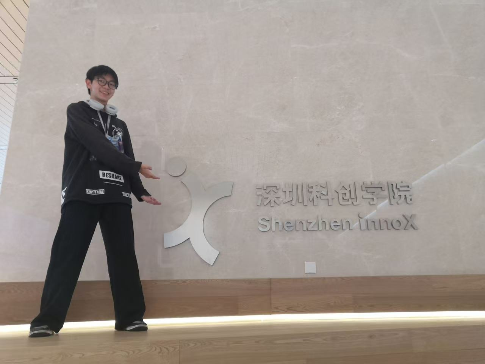
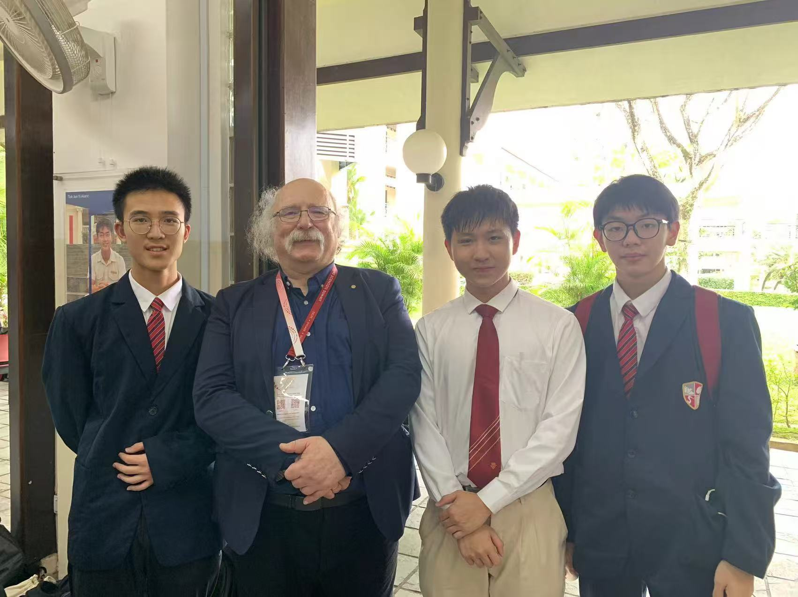

01科创项目 / ENGINEERING
深圳科创学院
“捕鱼达人”
项目实践
在深圳科创学院的“捕鱼达人”项目中，我主要负责机械设计、结构优化及机械车的结构搭建。
我的职责
- 机械设计
- 结构优化
- 机械车结构搭建
个人作品集 / PERSONAL PORTFOLIO
MURPHY WANG我是王一行（Murphy），
来自天津大学香港理工大学深圳未来技术学院。
SELECTED EXPERIENCES

深圳科创学院
在深圳科创学院的“捕鱼达人”项目中，我主要负责机械设计、结构优化及机械车的结构搭建。

华侨中学 · 新加坡
我曾以学生代表身份赴新加坡，参加由华侨中学举办的国际科学青年论坛（ISYF）。
International Science
Youth Forum
GET IN TOUCH
如希望进一步了解我的项目实践与科学交流经历，
欢迎与我联系。